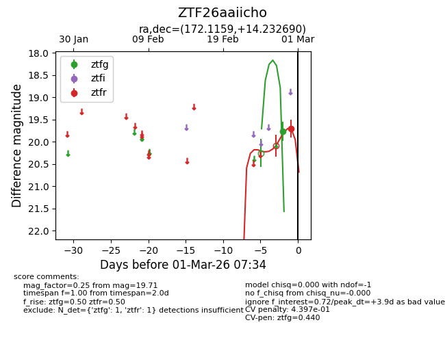
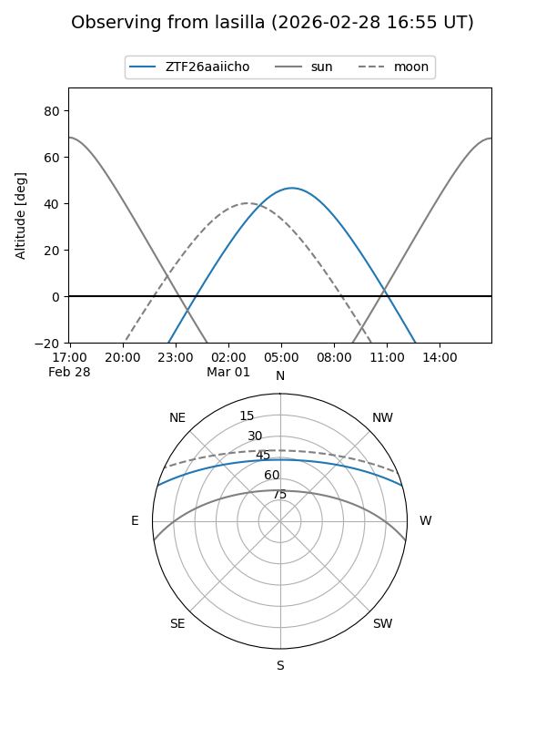
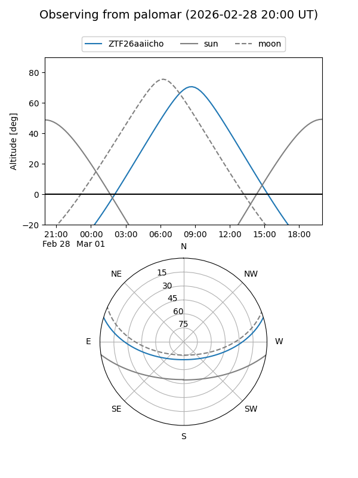
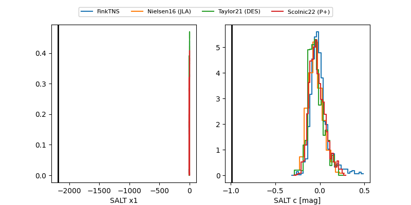

ZTF26aaiicho
Target ZTF26aaiicho at 2026-03-01 07:35
Aliases and brokers:
FINK: link
Lasair: link
ALeRCE: link
alt names
ZTF26aaiicho (ztf,fink_ztf)
Coordinates:
equatorial (ra, dec) = 172.1159,+14.23269
equatorial (HMS+DMS) = 11:28:27.82,+14:13:57.68
galactic (l, b) = (242.4679,+66.75938)
Flags:
likely cv
Photometry:
last ztfg=19.77, ztfr=19.71
1 ztfg, 1 ztfr detections
Lightcurve

Visibility


Additional plots
